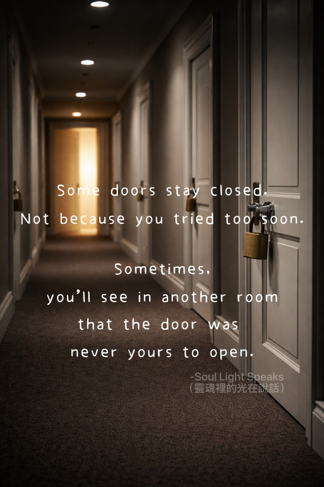

Some doors stay closed.
Not because you tried too soon.
Sometimes—
you will see in another room
that the door was never yours to open.
Not because you tried too soon.
Sometimes—
you will see in another room
that the door was never yours to open.
Not every door that stays closed
is a refusal.
Some are simply moved away
before you even reach them.
Time unfolds the answer slowly,
showing you—
whether the air behind that door
is meant for you to breathe.
You are not incapable,
nor unworthy.
Stepping in only reveals the truth:
I can hold on,
but I will slowly wither.
Some places
cannot be claimed through effort alone.
You realize—
if It is not yours,
there is no need to force yourself to stay.
You were not rejected.
You were protected.
Some doors remain closed
because you are not meant
to spend a lifetime inside.